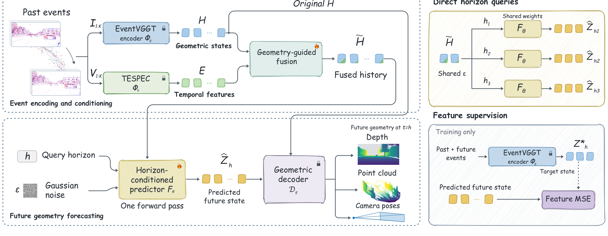
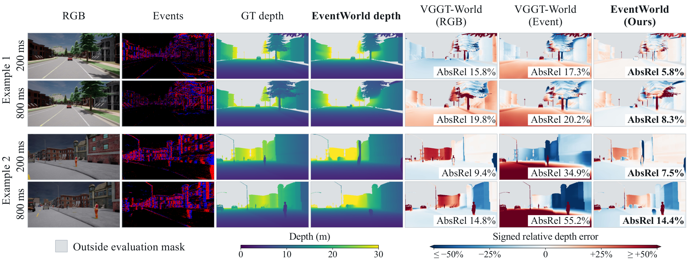
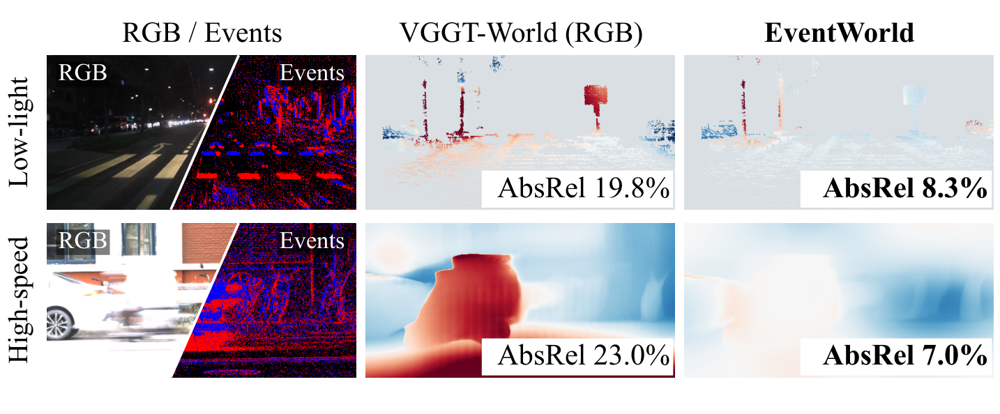

EventWorld Forecasting Future Geometry from Events Alone
Give EventWorld a short stream of camera events and a future time. It predicts the scene’s depth, point cloud, and camera pose in one forward pass.
Drag to compare views at the same target time. The RGB frame is shown as a visual reference.
Forecasting with events
- 19.1%
- lower mean depth AbsRel than DriveLaW (RGB) on the EventScape Town05 evaluation subset, 200–800 ms
- 50.4%
- lower mean depth AbsRel than VGGT-World (RGB) on one DSEC low-light recording, 100–800 ms
Event cameras report changes in brightness with microsecond timestamps. Those changes trace moving edges and reveal both the scene’s structure and its motion, including in recordings where RGB frames are dark or blurred.
EventWorld uses scene structure to decide which motion features to retain, then predicts a geometric state at the requested horizon. During training, a frozen encoder turns future events into targets for that state, so the forecasting stage needs no depth or pose annotations.
From events to geometry
Choose a forecast horizon. EventWorld predicts the geometric state directly in one forward pass.

Encode the history
Three 50 ms packets feed two frozen encoders. EventVGGT captures structure and TESPEC captures motion.
Query the future
Geometric features guide fusion at each patch. A horizon embedding lets the predictor produce the requested state directly.
Decode geometry
A shared frozen decoder reads the predicted state alongside the original history to forecast depth, point clouds, and camera poses.
What EventWorld forecasts
Depth and point clouds on EventScape Town05, and camera poses on M3ED without fine-tuning.

Depth accuracy by horizon
Evaluation on an EventScape Town05 subset. We align each prediction by median scale and score non-sky reference depths within 30 m.
| Method | 200 ms | 400 ms | 600 ms | 800 ms | Mean |
|---|---|---|---|---|---|
| EventWorld | 0.0789 / 93.49% | 0.0854 / 91.74% | 0.1003 / 89.20% | 0.1139 / 86.09% | 0.0946 / 90.13% |
| DriveLaW (RGB) | 0.0796 / 94.41% | 0.1090 / 91.76% | 0.1280 / 89.14% | 0.1515 / 85.36% | 0.1170 / 90.17% |
| VGGT-World (RGB) | 0.0917 / 93.81% | 0.1131 / 91.87% | 0.1862 / 79.52% | 0.1645 / 83.14% | 0.1389 / 87.09% |
| Copy-last (events) | 0.1202 / 88.90% | 0.1616 / 80.98% | 0.1903 / 72.26% | 0.2122 / 71.04% | 0.1711 / 78.30% |
Low light. Fast motion.
EventWorld transfers from EventScape to DSEC and PEOD without fine-tuning. Compare depth error across eight forecast horizons.

- EventWorld
- VGGT-World (RGB)
- VGGT-World (Event)
DSEC low-light recording, 83 windows. The depth reference comes from calibrated disparity, with valid points within 30 m and visible to both cameras.
View numerical data
| Horizon | EventWorld | VGGT-World (RGB) | VGGT-World (Event) |
|---|
Project film
The method, both driving sequences, and the geometry forecasting experiments.
Scope. The demo shows precomputed forecasts. EventWorld returns a single prediction per queried horizon. When the camera and scene are both still, sparse events limit what it can observe.